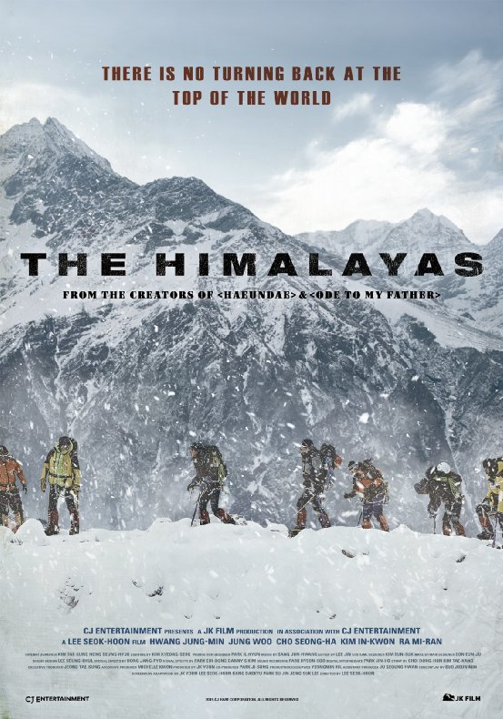
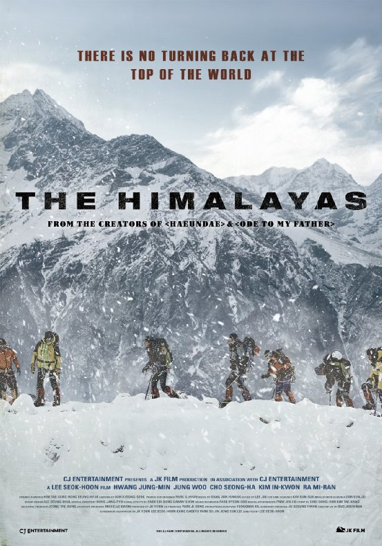
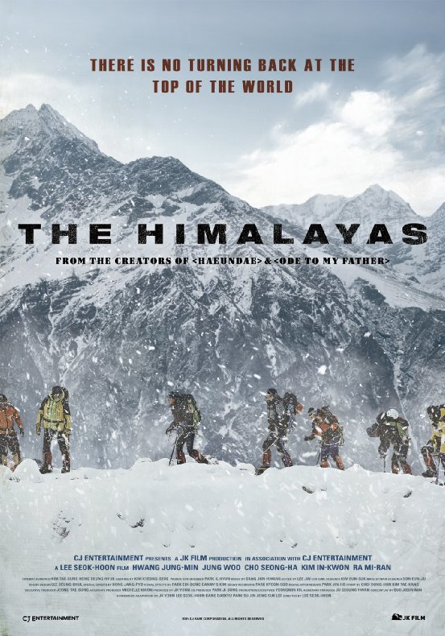

The Himalayas
Lee Seok-hoon
During a climb up Kangchenjunga, a mountaineer named Um Hong-gil (Hwang Jung-min) saves the life of Park Moo-taek (Jung Woo) and his friend Park Jeong-Bok (Kim In-kwon), in the aftermath he warned them never to climb mountains again. A few days later he and his crew got a project and he needs new members. One of his crew members introduced him to two young members who happen to be the ones he asked not to climb mountains. He refused to accept them but they would not give up, he had no choice but to say yes to their request to join in the crew's next adventure.
The Korean version of the poster went viral in Korea when it was released. People were taking pictures with the poster in front of their faces. Because of the numerous parodies, it became funny even though he is tearing up, covered in snow. The U.S. version of the poster shows a group of people that are climbing the mountain. The image serves as a clue to the plot of the movie Himalayas. The audience can expect adventure and achievements that the actors go through while climbing the Himalayas.